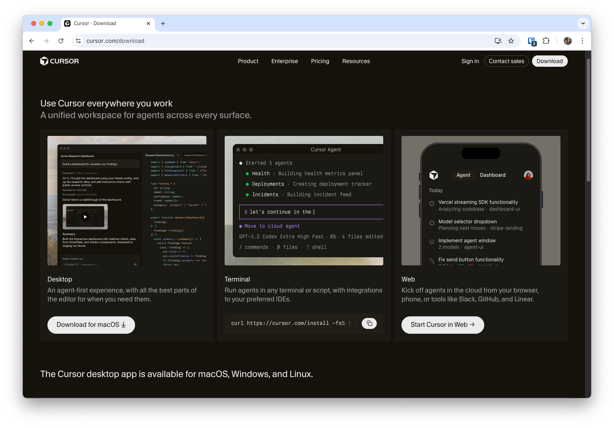

Build with
Cursor: Freiburg.
An Evening of Agentic Coding.

What we'll cover.
From autocomplete to agentic — and you'll build something before you leave.
Mostly curious. A few already building.
Self-reported Cursor experience from the attendees of the event.
The paradigm
shift.
From copy-paste assistance to codebase-aware agents that can act on your behalf.
How we get unstuck has changed.
Three eras, each with a different default reflex when you don't know how to do something.
What changes day-to-day.
Two concrete shifts in how you spend your time.
Context is the new skill.
The hard part isn't "how to implement X" — it's giving the agent the right information so it gets X right on the first pass.
Cursor fundamentals.
The product surface and mental model behind reliable agent-assisted work.
Get Cursor.
Download the desktop app for macOS, Windows, or Linux.

Ways of working.
Write code with AI inline, review diffs, accept edits, and stay in the editor flow.

Ways of working.
Plan, Build, Ask, and Debug in a full agent interface with multiple modes, Skills, and MCP servers.

Ways of working.
Run multiple agents in parallel across terminal sessions, with each one tackling a different task.

Ways of working.
Use the built-in browser mode for visual design, testing, and frontend iteration without leaving the IDE.

Ways of working.
Use cloud agents for extended tasks that can create PRs and handle complex multi-step work autonomously.

Ways of working.
Wire always-on agents into your SDLC with custom webhooks, cron jobs, and integrations like GitHub, Slack, and Linear.

The Cursor Ecosystem.
Access all frontier AI models — with built-in enhancements to make them smarter, faster, and codebase-aware.
Harness = the layer around the model.
In Cursor, the agent is not just a chatbot. The harness combines instructions, tools, and the model so it can act on your codebase.
Indexing gives the agent a usable map.
Cursor combines exact search and semantic search so you can ask natural questions and still reach the right files quickly.
Chat modes shape the workflow.
Use the lightest mode that fits the job: understand first, plan second, then edit or debug with evidence.
Talk to the agent.
The fastest way to start in Cursor is to describe what you want clearly and let the agent do the first draft.
Real-world workflows.
Concrete patterns for building, reviewing, and iterating with agents in practice.
3 need-to-know tips.
Concepts that pay dividends from day one.
Rules: write once, apply always.
Drop a file in .cursor/rules/ and every prompt inherits your conventions.
# Project conventions — every agent session picks these up. Stack: - TypeScript, React 19, Tailwind CSS. - No class components. Functional + hooks only. When generating code: - Always colocate tests next to the source file. - Use server actions for mutations, never raw fetch. - Prefer parameterized queries. Reject string concatenation in SQL. # One file. Every contributor, human or AI, follows the same rules.
What actually changes.
| Dimension | Traditional IDE | Agentic Coding |
|---|---|---|
| Context | Whatever you paste into the chat | Whole codebase, indexed & scoped |
| Conventions | Re-explained every prompt | Written once in rules, applied always |
| Tooling | Manual terminal, browser, docs | Agent runs tools via MCPs |
| Scope | One file, one suggestion | Multi-file changes, end to end |
The four pillars of Cursor.
Each one builds on the last. Together they close the loop.
"The best developers won't be replaced by AI —
they'll be the ones who learn to direct it."
The shift isn't about writing less code. It's about thinking at a higher level.
Hands-on building.
Choose a project, scope a small task, and ship something before you leave.
Let's build.
Pick a project, pick a feature, and let the agent build it.